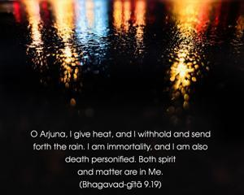
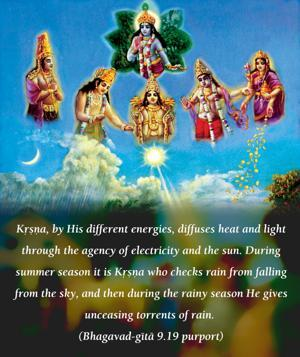
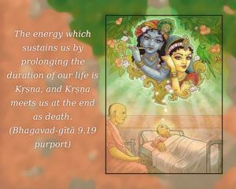
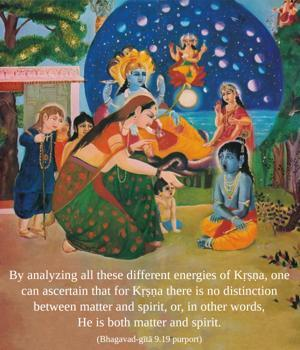
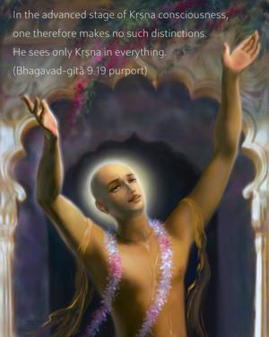
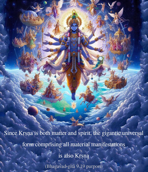

O Arjuna, I give heat, and I withhold and send forth the rain. I am immortality, and I am also death personified. Both spirit and matter are in Me.






Kṛṣṇa, by His different energies, diffuses heat and light through the agency of electricity and the sun. During the summer season it is Kṛṣṇa who checks rain from falling from the sky, and then during the rainy season He gives unceasing torrents of rain. The energy which sustains us by prolonging the duration of our life is Kṛṣṇa, and Kṛṣṇa meets us at the end as death. By analyzing all these different energies of Kṛṣṇa, one can ascertain that for Kṛṣṇa there is no distinction between matter and spirit, or, in other words, He is both matter and spirit. In the advanced stage of Kṛṣṇa consciousness, one therefore makes no such distinctions. He sees only Kṛṣṇa in everything.
Since Kṛṣṇa is both matter and spirit, the gigantic universal form comprising all material manifestations is also Kṛṣṇa, and His pastimes in Vṛndāvana as two-handed Śyāmasundara, playing on a flute, are those of the Supreme Personality of Godhead.